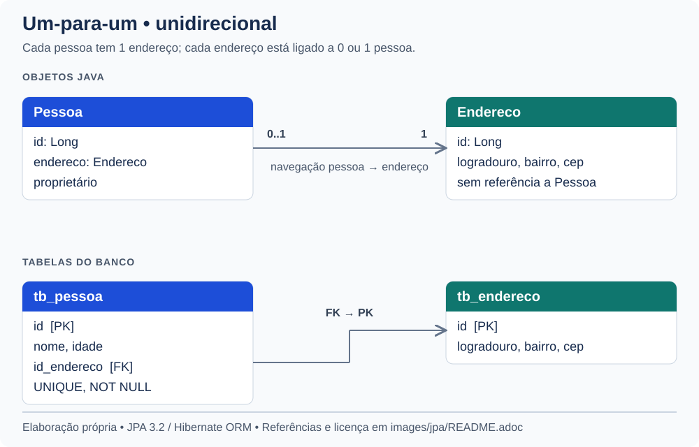
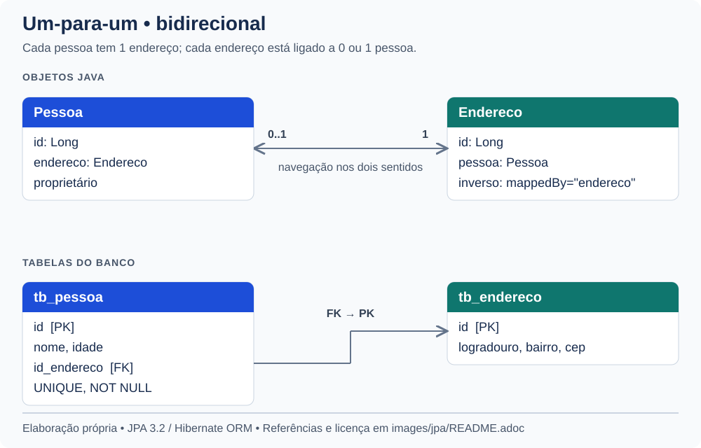
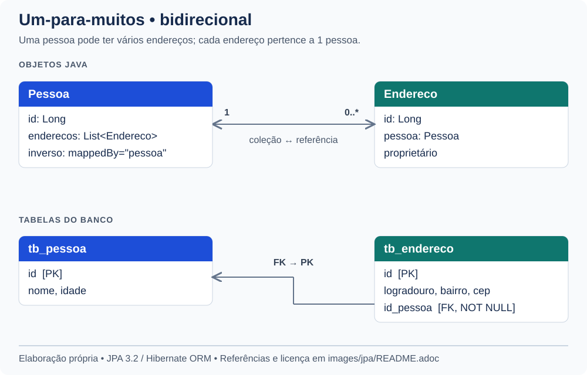
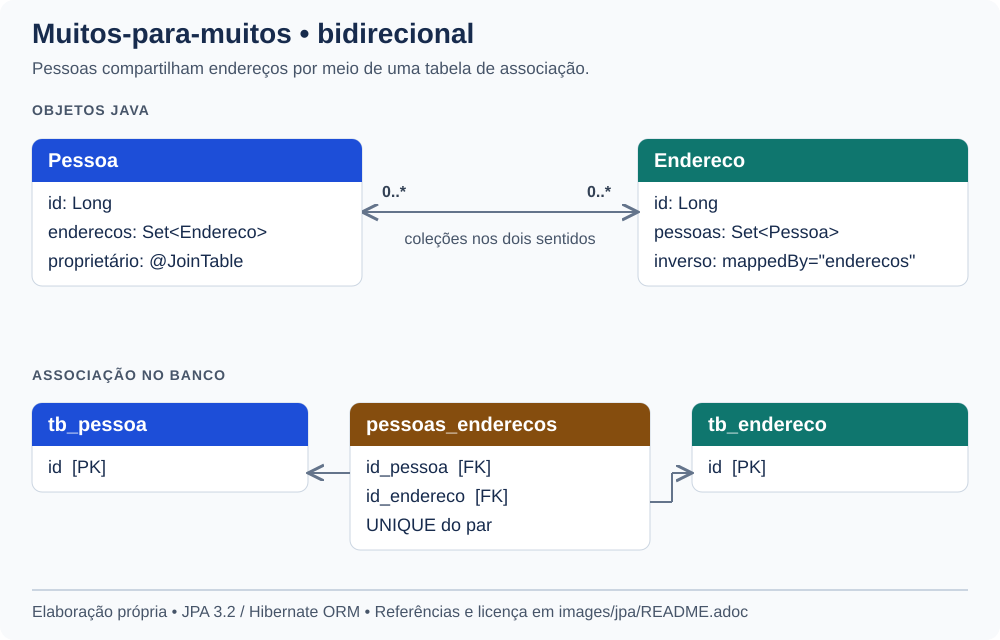
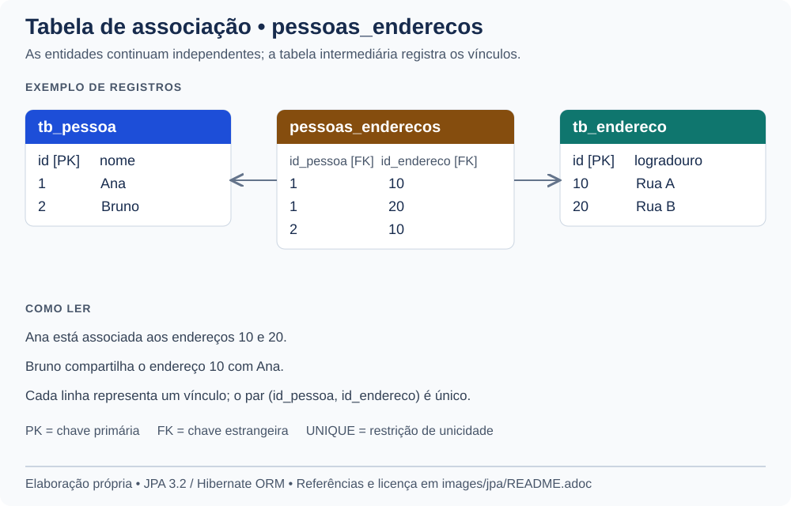
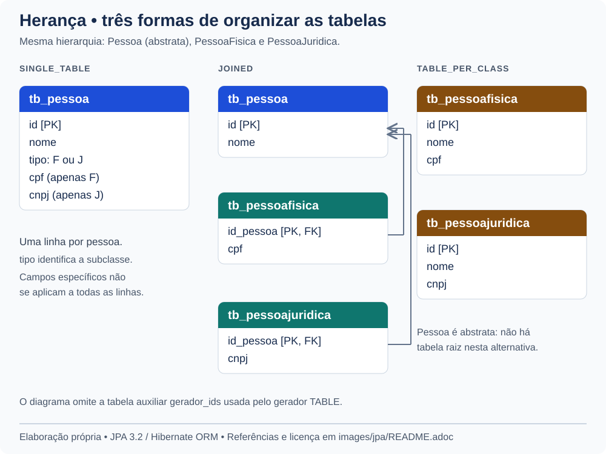

Programação para Web II
Fagno Alves Fonseca <fagno.fonseca@ifto.edu.br> Mestre em Modelagem Computacional de Sistemas – UFT.
1. Java Persistence API e Frameworks ORM
A Java Persistence API (JPA), atualmente denominada Jakarta Persistence, especifica como mapear objetos Java para um banco de dados relacional e gerenciar sua persistência. Ela define contratos e anotações; uma implementação, como Hibernate ORM ou EclipseLink, executa esse trabalho.
O mapeamento objeto-relacional (object-relational mapping, ORM) relaciona classes, atributos e associações a tabelas, colunas e chaves estrangeiras. Ele reduz o código repetitivo de acesso a dados, mas o entendimento de SQL e do modelo relacional continua necessário para avaliar consultas e desempenho.
Neste capítulo, partiremos do mapeamento de Pessoa, utilizaremos o EntityManager e estudaremos associações e herança. Ao final, veremos como o Spring Data JPA simplifica a implementação dos repositórios.
Os exemplos usam Spring Boot 4, Java 17 ou superior e Jakarta Persistence 3.2, com imports jakarta.persistence. As dependências devem ser gerenciadas pelo parent ou BOM da versão de Spring Boot adotada no projeto.
|
1.1. Dependências
Em um projeto Maven com o parent ou BOM do Spring Boot 4, adicione o starter de persistência e o driver JDBC do MySQL:
<dependency>
<groupId>org.springframework.boot</groupId>
<artifactId>spring-boot-starter-data-jpa</artifactId>
</dependency>
<dependency>
<groupId>com.mysql</groupId>
<artifactId>mysql-connector-j</artifactId>
<scope>runtime</scope>
</dependency>O starter reúne Spring Data JPA, Hibernate ORM e a infraestrutura JDBC. Mesmo antes de usar interfaces do Spring Data, podemos trabalhar diretamente com o EntityManager.
As versões devem acompanhar o gerenciamento de dependências do Spring Boot 4. Use com.mysql:mysql-connector-j, sem fixar uma versão diferente da gerenciada pelo BOM. Consulte a documentação do Connector/J. Esse driver é JDBC, não R2DBC.
1.2. Mapeamento básico
Uma entidade é uma classe anotada com @Entity, com identificador e construtor sem argumentos público ou protegido. Para portabilidade em JPA 3.2, a classe e seus membros persistentes não devem ser final.
import jakarta.persistence.Column;
import jakarta.persistence.Entity;
import jakarta.persistence.GeneratedValue;
import jakarta.persistence.GenerationType;
import jakarta.persistence.Id;
import jakarta.persistence.Table;
@Entity
@Table(name = "tb_pessoa")
public class Pessoa {
@Id
@GeneratedValue(strategy = GenerationType.IDENTITY)
private Long id;
@Column(nullable = false, length = 100)
private String nome;
private Integer idade;
public Pessoa() {
}
public Long getId() { return id; }
public void setId(Long id) { this.id = id; }
public String getNome() { return nome; }
public void setNome(String nome) { this.nome = nome; }
public Integer getIdade() { return idade; }
public void setIdade(Integer idade) { this.idade = idade; }
}O Long permite representar um identificador ainda não atribuído por null. GenerationType.IDENTITY utiliza a coluna de identidade do banco, como o AUTO_INCREMENT do MySQL. @GeneratedValue também admite SEQUENCE, TABLE, AUTO e UUID (para identificadores UUID ou String); portanto, a anotação, isoladamente, não significa auto incremento.
@Table explicita a tabela. Sem ela, o nome lógico padrão é o nome da entidade, mas a estratégia de nomes físicos do provedor ou do Spring Boot pode transformar esse nome. Como @Id está no campo, os exemplos usam acesso aos campos: o provedor não depende dos getters e setters para persistir os atributos.
Implementar Serializable não é uma exigência geral de uma entidade. Essa interface é necessária em cenários que exigem serialização da instância, como sua passagem por valor em uma interface remota.
1.2.1. Principais anotações
| Anotação | Finalidade |
|---|---|
|
Declara uma entidade gerenciada pela JPA. |
|
Configura a tabela e suas restrições. |
|
Declaram uma chave simples / composta representada por um objeto embutido. |
|
Configura a geração de uma chave simples. |
|
Configura nome, nulabilidade, tamanho e outras características da coluna. |
|
Exclui um atributo do mapeamento persistente. |
|
Persiste o nome de uma constante enum; evita depender de sua posição ordinal. |
|
Declaram e incorporam um objeto de valor, sem identidade própria de entidade. |
|
Define o atributo usado no controle de concorrência otimista. |
|
Definem associações entre entidades. |
|
Configuram a coluna de junção / tabela de associação. |
|
Seleciona a estratégia de herança entre entidades. |
@Column(nullable = false) descreve a coluna do banco. Para apresentar um erro de preenchimento no formulário, use também Bean Validation, como @NotBlank, conforme o capítulo de validação.
1.3. O arquivo application.properties
Configure a conexão em src/main/resources/application.properties. Crie previamente o banco pwebii e um usuário com acesso a ele. Defina as variáveis de ambiente DB_USER e DB_PASSWORD antes de iniciar a aplicação.
spring.datasource.url=jdbc:mysql://localhost:3306/pwebii
spring.datasource.username=${DB_USER}
spring.datasource.password=${DB_PASSWORD}
spring.jpa.hibernate.ddl-auto=update
spring.jpa.show-sql=true
spring.jpa.properties.hibernate.format_sql=trueurl, username e password identificam o banco e as credenciais. show-sql exibe comandos SQL e format_sql facilita sua leitura.
A propriedade ddl-auto controla a interação do Hibernate com o esquema:
| Valor | Comportamento |
|---|---|
|
Não gerencia o esquema. |
|
Verifica a compatibilidade do esquema com o mapeamento, sem alterá-lo. |
|
Tenta atualizar o esquema existente. |
|
Recria o esquema na inicialização, removendo os dados anteriores. |
|
Recria o esquema na inicialização e o remove no encerramento. |
update é conveniente para exercícios, mas não substitui um histórico de migrações. Em uma aplicação publicada, prefira migrações com Flyway ou Liquibase e uma escolha explícita de none ou validate. Consulte a documentação de inicialização do banco no Spring Boot.
2. EntityManager
O EntityManager oferece operações para inserir, localizar, consultar e remover entidades. Ele atua sobre um contexto de persistência, que acompanha as instâncias gerenciadas.
| Estado | Significado |
|---|---|
Novo (new) |
Objeto criado na aplicação e ainda não persistido. |
Gerenciado (managed) |
Objeto associado ao contexto; suas alterações podem ser sincronizadas com o banco. |
Desanexado (detached) |
Objeto com identidade persistente, mas fora do contexto atual. |
Removido (removed) |
Objeto marcado para exclusão na sincronização com o banco. |
persist() torna uma entidade nova gerenciada. find() busca pelo identificador e retorna null quando não encontra. merge() copia o estado recebido para uma instância gerenciada e retorna essa instância; o argumento não se torna automaticamente gerenciado. remove() recebe uma entidade gerenciada.
flush() sincroniza alterações pendentes com o banco, mas não confirma a transação. O SQL pode ser executado antes do commit, inclusive para obter um identificador. Em uma transação, alterações de uma entidade gerenciada são detectadas pelo provedor (dirty checking).
No Spring Boot, a infraestrutura configura o EntityManagerFactory. Usaremos @PersistenceContext para obter acesso ao EntityManager associado ao contexto transacional, sem criá-lo ou fechá-lo manualmente.
Referência: API de EntityManager.
3. Inversão de controle e Injeção de dependência
Na inversão de controle (IoC), o contêiner assume responsabilidades como criar e conectar componentes. A injeção de dependências (DI) é uma forma de realizar essa conexão: o componente recebe os colaboradores de que precisa.
No exemplo, o Spring cria o repositório e o injeta no controller. Para que isso ocorra com a configuração padrão do Spring Boot, coloque esses componentes no pacote da classe principal da aplicação ou em seus subpacotes.
3.1. Escopos de componentes
O escopo determina quando uma instância de bean é criada e compartilhada:
| Escopo | Duração e compartilhamento |
|---|---|
|
Padrão: uma instância por definição de bean em cada contêiner Spring. |
|
Uma nova instância a cada solicitação do bean ao contêiner. |
|
Uma instância por requisição HTTP. |
|
Uma instância por sessão HTTP. |
|
Uma instância por |
|
Uma instância por sessão WebSocket. |
Os quatro últimos escopos exigem um contexto web adequado. Um bean prototype injetado diretamente em um singleton é resolvido na criação desse singleton; isso não produz uma nova instância a cada chamada de método.
Controllers e repositórios singleton devem evitar campos mutáveis com dados de usuários ou requisições. A injeção de EntityManager gerenciada pelo Spring usa um proxy; não significa que um único EntityManager real possa ser compartilhado livremente entre threads.
Referência: escopos de beans no Spring Framework.
3.2. Definindo um Repository
A classe PessoaRepository concentra o acesso aos dados. As operações de escrita usam transações; consultas são marcadas como somente leitura.
import java.util.List;
import jakarta.persistence.EntityManager;
import jakarta.persistence.PersistenceContext;
import org.springframework.stereotype.Repository;
import org.springframework.transaction.annotation.Transactional;
@Repository
@Transactional(readOnly = true)
public class PessoaRepository {
@PersistenceContext
private EntityManager em;
@Transactional
public void save(Pessoa pessoa) {
em.persist(pessoa);
}
public Pessoa pessoa(Long id) {
return em.find(Pessoa.class, id);
}
public List<Pessoa> pessoas() {
return em.createQuery(
"select p from Pessoa p order by p.nome, p.id", Pessoa.class
).getResultList();
}
@Transactional
public void remove(Long id) {
Pessoa pessoa = em.find(Pessoa.class, id);
if (pessoa != null) {
em.remove(pessoa);
}
}
@Transactional
public Pessoa update(Pessoa pessoa) {
return em.merge(pessoa);
}
}@Repository identifica um componente de acesso a dados e permite sua participação na tradução de exceções de persistência do Spring. @PersistenceContext fornece o acesso ao contexto de persistência.
A consulta usa JPQL: Pessoa e nome são a entidade e o atributo Java, não a tabela tb_pessoa e suas colunas. Informar Pessoa.class cria uma consulta tipada e evita conversões de uma lista sem tipo.
O método save() acima insere entidades novas; update() demonstra merge(). Esses nomes são escolhas desta classe e não possuem automaticamente o comportamento dos métodos do Spring Data JPA.
3.3. Alterando nosso Controller
A injeção por construtor deixa explícita a dependência obrigatória do controller e permite armazená-la em um campo final. Quando há apenas um construtor, o Spring o utiliza automaticamente, sem exigir @Autowired. Este é o padrão adotado nos exemplos de controllers e serviços deste material, conforme a documentação de injeção de dependências e a regra de seleção do construtor.
import org.springframework.stereotype.Controller;
import org.springframework.ui.Model;
import org.springframework.web.bind.annotation.GetMapping;
import org.springframework.web.bind.annotation.RequestMapping;
@Controller
@RequestMapping("/pessoas")
public class PessoasController {
private final PessoaRepository repository;
public PessoasController(PessoaRepository repository) {
this.repository = repository;
}
@GetMapping("/list")
public String listar(Model model) {
model.addAttribute("pessoas", repository.pessoas());
return "pessoas/list";
}
}O template src/main/resources/templates/pessoas/list.html recebe a coleção pessoas. As transações deste exemplo ficam no repositório. Quando uma operação de negócio envolve várias chamadas, delimite a transação em um serviço, como veremos no tópico de Spring Data JPA.
@Transactional funciona por interceptação das chamadas ao bean. Na configuração padrão por proxy, chamar um método anotado a partir de outro método da mesma instância não inicia uma nova interceptação. Por padrão, RuntimeException e Error provocam rollback; exceções verificadas exigem configuração quando também devem provocá-lo. readOnly = true é uma indicação de otimização, não um bloqueio universal de escrita.
Referência: transações declarativas no Spring.
4. Mapeamento com associações
Associações expressam relações entre entidades. A cardinalidade informa quantos objetos podem se relacionar; a direção indica quais referências existem no código Java.
Em uma associação bidirecional, o lado proprietário define a atualização da relação no banco. O lado inverso usa mappedBy, cujo valor é o nome do atributo Java no proprietário. Não se trata de uma classificação de entidades em “fortes” e “fracas”.
Os exemplos a seguir são alternativas de modelagem. Não acrescente todas as associações à mesma classe Pessoa. Nos trechos, mantenha os campos básicos, construtores e acessores apresentados anteriormente e acrescente os imports indicados.
|
Os diagramas deste capítulo foram elaborados para este material, em SVG editável, a partir dos exemplos. As referências documentam os conceitos, sem reprodução de figuras das documentações. A procedência e os arquivos estão descritos em Diagramas de JPA.
4.1. um-para-um
No exemplo, cada pessoa possui um endereço obrigatório, e um endereço pode estar vinculado a, no máximo, uma pessoa. As entidades ocupam tabelas distintas. A chave estrangeira fica em tb_pessoa.id_endereco, com restrição de unicidade.

import jakarta.persistence.JoinColumn;
import jakarta.persistence.OneToOne;
// Dentro de Pessoa:
@OneToOne(optional = false)
@JoinColumn(name = "id_endereco", nullable = false, unique = true)
private Endereco endereco;
public Endereco getEndereco() { return endereco; }
public void setEndereco(Endereco endereco) { this.endereco = endereco; }import jakarta.persistence.Entity;
import jakarta.persistence.GeneratedValue;
import jakarta.persistence.GenerationType;
import jakarta.persistence.Id;
import jakarta.persistence.Table;
@Entity
@Table(name = "tb_endereco")
public class Endereco {
@Id
@GeneratedValue(strategy = GenerationType.IDENTITY)
private Long id;
private String logradouro;
private String bairro;
private String cep;
public Endereco() {
}
// Getters e setters dos campos.
}optional = false declara que a referência é obrigatória; nullable = false e unique = true descrevem as restrições da coluna. Como não configuramos cascata, associe uma instância de Endereco já persistida ou persista o endereço antes da pessoa, na mesma transação.
Um objeto de valor que deva compartilhar a tabela da pessoa pode ser modelado com @Embeddable e @Embedded, em vez desta associação entre entidades.
4.1.1. Associação bidirecional
Para navegar também de endereço para pessoa, acrescente a referência inversa em Endereco:

import jakarta.persistence.OneToOne;
// Dentro de Endereco:
@OneToOne(mappedBy = "endereco")
private Pessoa pessoa;
public Pessoa getPessoa() { return pessoa; }
public void setPessoa(Pessoa pessoa) { this.pessoa = pessoa; }mappedBy = "endereco" aponta para Pessoa.endereco. A bidirecionalidade não cria uma segunda chave estrangeira. Ao montar a relação em memória, atualize ambos os lados:
pessoa.setEndereco(endereco);
endereco.setPessoa(pessoa);Alterar apenas Endereco.pessoa não atualiza o lado proprietário. Referência: API de OneToOne.
4.2. um-para-muitos
Agora uma pessoa pode possuir zero ou vários endereços, e cada endereço pertence a uma pessoa. Substitua o mapeamento anterior: a chave estrangeira passa para tb_endereco.id_pessoa.

import java.util.ArrayList;
import java.util.List;
import jakarta.persistence.OneToMany;
// Dentro de Pessoa:
@OneToMany(mappedBy = "pessoa")
private List<Endereco> enderecos = new ArrayList<>();
public List<Endereco> getEnderecos() { return enderecos; }
public void adicionarEndereco(Endereco endereco) {
enderecos.add(endereco);
endereco.setPessoa(this);
}import jakarta.persistence.JoinColumn;
import jakarta.persistence.ManyToOne;
// Dentro de Endereco:
@ManyToOne(optional = false)
@JoinColumn(name = "id_pessoa", nullable = false)
private Pessoa pessoa;
public Pessoa getPessoa() { return pessoa; }
public void setPessoa(Pessoa pessoa) { this.pessoa = pessoa; }O lado @ManyToOne é o proprietário desta associação. O método auxiliar mantém as referências consistentes ao adicionar um novo endereço; uma transferência entre pessoas também deve retirar o endereço da coleção anterior.
Sem cascata, persistir Pessoa não persiste automaticamente seus novos endereços. Na mesma transação, persista a pessoa, associe os endereços e persista cada um deles.
@OneToMany também admite mapeamento unidirecional; o uso de mappedBy neste exemplo decorre da escolha bidirecional. Referência: API de OneToMany.
4.3. muitos-para-muitos
Nesta alternativa, pessoas podem compartilhar endereços, e cada pessoa pode ter vários endereços. Uma tabela intermediária registra os pares de identificadores.

import java.util.HashSet;
import java.util.Set;
import jakarta.persistence.JoinColumn;
import jakarta.persistence.JoinTable;
import jakarta.persistence.ManyToMany;
import jakarta.persistence.UniqueConstraint;
// Dentro de Pessoa:
@ManyToMany
@JoinTable(
name = "pessoas_enderecos",
joinColumns = @JoinColumn(name = "id_pessoa"),
inverseJoinColumns = @JoinColumn(name = "id_endereco"),
uniqueConstraints = @UniqueConstraint(
columnNames = {"id_pessoa", "id_endereco"}
)
)
private Set<Endereco> enderecos = new HashSet<>();
public Set<Endereco> getEnderecos() { return enderecos; }
public void adicionarEndereco(Endereco endereco) {
enderecos.add(endereco);
endereco.getPessoas().add(this);
}import java.util.HashSet;
import java.util.Set;
import jakarta.persistence.ManyToMany;
// Dentro de Endereco:
@ManyToMany(mappedBy = "enderecos")
private Set<Pessoa> pessoas = new HashSet<>();
public Set<Pessoa> getPessoas() { return pessoas; }joinColumns identifica a referência ao proprietário, Pessoa; inverseJoinColumns identifica a referência a Endereco. A restrição composta impede repetir o mesmo par no banco.
O Set evita duplicatas conforme equals() e hashCode(). Ao implementá-los em entidades, não use associações nem atributos mutáveis que alterem o hash enquanto o objeto estiver na coleção.

Se a relação precisar de atributos próprios, como “data de início da residência”, modele uma entidade associativa com duas relações @ManyToOne. Referência: API de ManyToMany.
4.3.1. Cascata, remoção de órfãos e carregamento
cascade propaga operações do ciclo de vida, como PERSIST e MERGE; não define o carregamento da associação. CascadeType.ALL inclui REMOVE, portanto não deve ser aplicado indiscriminadamente a objetos compartilhados.
orphanRemoval = true, disponível em @OneToOne e @OneToMany, permite remover do banco um filho retirado da relação. Use-o quando o filho pertence exclusivamente ao ciclo de vida do pai. Nos exemplos, essa opção não foi ativada.
O padrão é EAGER para @OneToOne e @ManyToOne, e LAZY para coleções @OneToMany e @ManyToMany. LAZY é uma indicação ao provedor; EAGER exige carregamento, mas não garante uma única consulta SQL.
Planeje o carregamento para cada caso de uso, usando, quando adequado, JPQL com join fetch ou grafos de entidades. Observe o SQL para identificar consultas adicionais a cada item de uma lista (problema N+1). Com Hibernate, acessar uma relação não inicializada após fechar o contexto pode causar LazyInitializationException.
5. Mapeamento com Herança
A JPA oferece três estratégias para hierarquias de entidades. Os exemplos abaixo são alternativas: use apenas uma estratégia por hierarquia. Nesta parte, Pessoa será uma classe abstrata, diferente da entidade concreta dos exemplos anteriores.
| Estratégia | Organização | Característica |
|---|---|---|
|
Uma tabela para toda a hierarquia. |
Consultas sem junções entre tabelas da hierarquia; colunas específicas podem ficar nulas. |
|
Tabela da raiz e tabelas das subclasses. |
Evita repetir campos comuns; consultas podem exigir junções. |
|
Tabela para cada entidade concreta. |
Repete campos herdados; consultas polimórficas podem exigir uniões. |

5.1. Tabela Única por Hierarquia de Classes
Em SINGLE_TABLE, uma coluna discriminadora identifica a subclasse de cada registro. É a estratégia padrão quando uma hierarquia de entidades não declara outra estratégia.
import jakarta.persistence.DiscriminatorColumn;
import jakarta.persistence.Entity;
import jakarta.persistence.GeneratedValue;
import jakarta.persistence.GenerationType;
import jakarta.persistence.Id;
import jakarta.persistence.Inheritance;
import jakarta.persistence.InheritanceType;
import jakarta.persistence.Table;
@Entity
@Table(name = "tb_pessoa")
@Inheritance(strategy = InheritanceType.SINGLE_TABLE)
@DiscriminatorColumn(name = "tipo")
public abstract class Pessoa {
@Id
@GeneratedValue(strategy = GenerationType.IDENTITY)
private Long id;
private String nome;
// Construtor sem argumentos implícito; getters e setters omitidos.
}import jakarta.persistence.DiscriminatorValue;
import jakarta.persistence.Entity;
@Entity
@DiscriminatorValue("F")
public class PessoaFisica extends Pessoa {
private String cpf;
// Getters e setters.
}import jakarta.persistence.DiscriminatorValue;
import jakarta.persistence.Entity;
@Entity
@DiscriminatorValue("J")
public class PessoaJuridica extends Pessoa {
private String cnpj;
// Getters e setters.
}A tabela tb_pessoa contém id, nome, tipo, cpf e cnpj. Em um registro do tipo F, cnpj não se aplica; em um registro do tipo J, cpf não se aplica. Por isso, uma restrição NOT NULL incondicional nessas colunas específicas não representa corretamente essa modelagem. Campos comuns, como nome, ainda podem ser obrigatórios.
5.2. Uma tabela para cada classe da hierarquia
Em JOINED, os campos comuns ficam na tabela da raiz, e os específicos ficam nas tabelas das subclasses. O identificador da subclasse também referencia o registro da raiz.
import jakarta.persistence.Entity;
import jakarta.persistence.GeneratedValue;
import jakarta.persistence.GenerationType;
import jakarta.persistence.Id;
import jakarta.persistence.Inheritance;
import jakarta.persistence.InheritanceType;
import jakarta.persistence.Table;
@Entity
@Table(name = "tb_pessoa")
@Inheritance(strategy = InheritanceType.JOINED)
public abstract class Pessoa {
@Id
@GeneratedValue(strategy = GenerationType.IDENTITY)
private Long id;
private String nome;
// Getters e setters.
}import jakarta.persistence.Entity;
import jakarta.persistence.PrimaryKeyJoinColumn;
import jakarta.persistence.Table;
@Entity
@Table(name = "tb_pessoafisica")
@PrimaryKeyJoinColumn(name = "id_pessoa")
public class PessoaFisica extends Pessoa {
private String cpf;
// Getters e setters.
}import jakarta.persistence.Entity;
import jakarta.persistence.PrimaryKeyJoinColumn;
import jakarta.persistence.Table;
@Entity
@Table(name = "tb_pessoajuridica")
@PrimaryKeyJoinColumn(name = "id_pessoa")
public class PessoaJuridica extends Pessoa {
private String cnpj;
// Getters e setters.
}Uma pessoa física ocupa uma linha em tb_pessoa e outra em tb_pessoafisica, ligadas pelo identificador. As subclasses herdam @Id; não declaram uma nova identidade. Nesta alternativa, retire os discriminadores do exemplo SINGLE_TABLE.
5.3. Uma tabela para cada classe concreta
Em TABLE_PER_CLASS, cada tabela concreta reúne os campos próprios e herdados. Como Pessoa é abstrata, neste exemplo não há uma tabela para instâncias diretas dela.
import jakarta.persistence.Entity;
import jakarta.persistence.GeneratedValue;
import jakarta.persistence.GenerationType;
import jakarta.persistence.Id;
import jakarta.persistence.Inheritance;
import jakarta.persistence.InheritanceType;
import jakarta.persistence.TableGenerator;
@Entity
@Inheritance(strategy = InheritanceType.TABLE_PER_CLASS)
public abstract class Pessoa {
@Id
@TableGenerator(
name = "pessoa_ids",
table = "gerador_ids",
pkColumnName = "segmento",
valueColumnName = "proximo_valor",
pkColumnValue = "pessoa",
allocationSize = 1
)
@GeneratedValue(strategy = GenerationType.TABLE, generator = "pessoa_ids")
private Long id;
private String nome;
// Getters e setters.
}import jakarta.persistence.Entity;
import jakarta.persistence.Table;
@Entity
@Table(name = "tb_pessoafisica")
public class PessoaFisica extends Pessoa {
private String cpf;
// Getters e setters.
}import jakarta.persistence.Entity;
import jakarta.persistence.Table;
@Entity
@Table(name = "tb_pessoajuridica")
public class PessoaJuridica extends Pessoa {
private String cnpj;
// Getters e setters.
}O gerador em tabela compartilha a geração de IDs da hierarquia e funciona com o MySQL deste exemplo. No Hibernate, IDENTITY não é suportado nessa estratégia. TABLE exige acesso adicional à tabela geradora; bancos com sequências permitem avaliar SEQUENCE como alternativa.
Retire @PrimaryKeyJoinColumn das subclasses nesta alternativa: os campos herdados ficam em cada tabela concreta, sem uma tabela raiz para a junção. O suporte a TABLE_PER_CLASS é opcional na especificação JPA 3.2, embora seja oferecido pelo Hibernate.
@MappedSuperclass permite compartilhar mapeamentos sem tornar a superclasse uma entidade consultável. É uma opção diferente de uma hierarquia de entidades consultada polimorficamente.
|
Referências: API de Inheritance e herança no Hibernate ORM.
6. Spring Data JPA
O Spring Data JPA cria implementações de repositórios a partir de interfaces. Ele utiliza JPA e seu provedor, como Hibernate; não substitui o ORM, os mapeamentos nem a necessidade de compreender transações e consultas.
O starter já foi adicionado no início do capítulo. Neste tópico, volte à Pessoa concreta do mapeamento básico, com Long id, String nome e Integer idade, sem a hierarquia de herança.
6.1. Criando uma interface de repositório
Substitua a classe manual PessoaRepository pela interface abaixo. Elas são duas alternativas de implementação, não devem coexistir com o mesmo nome.
import java.util.List;
import org.springframework.data.jpa.repository.JpaRepository;
public interface PessoaRepository extends JpaRepository<Pessoa, Long> {
List<Pessoa> findByNome(String nome);
}Pessoa é o tipo da entidade e Long é o tipo de sua chave. Coloque a interface no pacote da aplicação ou em um subpacote para que a configuração automática a encontre. Não é necessário implementar seus métodos nem adicionar @Repository à interface neste caso.
Ao estender JpaRepository, a interface já recebe os métodos básicos de acesso aos dados. Você não precisa declará-los novamente: o Spring Data JPA fornece a implementação em tempo de execução. O método findByNome, declarado no exemplo, acrescenta uma busca específica da nossa aplicação.
| Método herdado | Uso |
|---|---|
|
Salva uma entidade; usa |
|
Retorna |
|
Consulta todas as pessoas; para conjuntos maiores, prefira paginação. |
|
Consulta uma página de resultados. |
|
Verifica a existência pelo identificador. |
|
Solicitam a exclusão, sujeita às restrições do banco. |
No controller anterior, troque repository.pessoas() por repository.findAll(). O nome save() agora segue o contrato do Spring Data, diferente do método manual que apenas chamava persist().
Referência: API de JpaRepository.
6.2. Criando uma busca simples pelo nome
Para buscar pessoas pelo nome, declaramos apenas a assinatura do método:
List<Pessoa> findByNome(String nome);O Spring Data JPA interpreta o nome do método para criar a consulta. Esse recurso é chamado de consulta derivada:
-
findByindica uma busca por uma condição. -
Nomecorresponde ao atributonomeda entidadePessoa. -
O parâmetro
nomefornece o valor que será comparado por igualdade. -
List<Pessoa>permite retornar várias pessoas com o mesmo nome. Se nenhuma for encontrada, a lista estará vazia.
Por exemplo, em um método de serviço ou controller que já recebeu o repositório por construtor:
List<Pessoa> pessoas = repository.findByNome("Ana");Importe java.util.List na classe que faz a chamada. A consulta procura o nome informado, em vez de um trecho dele. A diferenciação entre maiúsculas, minúsculas e acentos depende das regras de comparação do banco de dados.
Não é necessário escrever SQL, usar @Query ou criar uma classe que implemente essa interface para realizar essa busca. O nome após findBy deve corresponder a um atributo existente na entidade. Os métodos herdados, como findAll() e save(), continuam disponíveis normalmente.
6.3. Criação de consultas pelo nome do método (Query Creation)
Podemos combinar atributos de Pessoa com palavras-chave para declarar outras buscas. Os métodos abaixo retornam List<Pessoa> e devem ser declarados na interface para serem utilizados.
| Palavra-chave | Assinatura do método | Condição |
|---|---|---|
Igualdade |
|
Nome igual ao parâmetro. |
|
|
Nome e idade correspondem. |
|
|
Nome ou idade corresponde. |
|
|
Nome contém o trecho. |
|
|
Nome começa com o texto. |
|
|
Nome termina com o texto. |
|
|
Igualdade ignorando maiúsculas/minúsculas. |
|
|
Idade maior ou igual. |
|
|
Idade menor. |
|
|
Intervalo inclusivo de idades. |
|
|
Idade não informada. |
|
|
Idade presente na lista. |
|
|
Filtra nome; ordena idade crescente. |
Asc indica ordem crescente; Desc, decrescente. Métodos sem OrderBy ou ordenação explícita não garantem a ordem dos resultados.
import java.util.List;
import org.springframework.data.jpa.repository.JpaRepository;
public interface PessoaRepository extends JpaRepository<Pessoa, Long> {
List<Pessoa> findByNome(String nome);
List<Pessoa> findByNomeContaining(String trecho);
List<Pessoa> findByIdadeGreaterThanEqual(Integer idade);
List<Pessoa> findByNomeAndIdade(String nome, Integer idade);
}List<Pessoa> nomes = repository.findByNomeContaining("Ana");
List<Pessoa> adultos = repository.findByIdadeGreaterThanEqual(18);
List<Pessoa> pessoas = repository.findByNomeAndIdade("Ana", 20);Na última chamada, as duas condições devem ser atendidas. Os parâmetros seguem a ordem dos atributos no nome do método. Não redeclare os métodos herdados da tabela anterior.
Referência: Spring Data JPA — Query Creation.
6.4. Declarando consultas com @Query
A anotação @Query, colocada acima do método, permite escrever a consulta diretamente na interface. Neste exemplo, acrescentamos uma busca pelo nome à mesma PessoaRepository; mantenha os métodos anteriores.
import org.springframework.data.jpa.repository.Query;
import org.springframework.data.repository.query.Param;
// Dentro da interface PessoaRepository:
@Query("select p from Pessoa p where p.nome = :nome")
List<Pessoa> buscarPorNome(@Param("nome") String nome);Mantenha também o import de java.util.List. A consulta usa JPQL, que trabalha com entidades e atributos Java:
| Trecho | Significado |
|---|---|
|
Retorna as pessoas encontradas. |
|
Consulta a entidade |
|
Compara o atributo |
|
Associa o argumento do método ao parâmetro |
List<Pessoa> pessoas = repository.buscarPorNome("Ana");Para esse argumento, a busca equivale à de findByNome("Ana"). Com @Query, a consulta está na anotação; o nome buscarPorNome não precisa seguir a convenção findBy. Os métodos herdados continuam disponíveis.
Em JPQL, use Pessoa e seus atributos, não o nome da tabela tb_pessoa. O valor recebido é vinculado pelo parâmetro, sem concatená-lo à consulta. Consultas SQL nativas exigem nativeQuery = true e utilizam tabelas e colunas.
|
6.5. Paginação e ordenação
import java.util.List;
import org.springframework.data.domain.Page;
import org.springframework.data.domain.PageRequest;
import org.springframework.data.domain.Pageable;
import org.springframework.data.domain.Sort;
// Dentro de um método:
Pageable pageable = PageRequest.of(0, 10, Sort.by("nome").and(Sort.by("id")));
Page<Pessoa> pagina = repository.findAll(pageable);
List<Pessoa> pessoas = pagina.getContent();
long total = pagina.getTotalElements();O índice da primeira página é zero. Ordenar também por id desempata nomes iguais. Page oferece totais, podendo executar uma consulta de contagem; Slice é uma alternativa em métodos de consulta quando basta saber se há uma próxima parte.
6.6. Transações na camada de serviço
Um serviço define a unidade de trabalho. Neste exemplo, buscamos a pessoa e alteramos seu nome dentro da mesma transação:
import org.springframework.stereotype.Service;
import org.springframework.transaction.annotation.Transactional;
@Service
public class PessoaService {
private final PessoaRepository repository;
public PessoaService(PessoaRepository repository) {
this.repository = repository;
}
@Transactional
public void alterarNome(Long id, String novoNome) {
Pessoa pessoa = repository.findById(id)
.orElseThrow(() -> new IllegalArgumentException("Pessoa não encontrada."));
pessoa.setNome(novoNome);
}
}A entidade obtida permanece gerenciada na transação; o Hibernate detecta a alteração sem exigir outro save(). O controller deve receber e chamar o serviço para executar essa operação. Valide novoNome conforme as regras da aplicação antes de atribuí-lo.
As operações CRUD herdadas possuem configuração transacional. Métodos de consulta declarados na interface não recebem automaticamente a mesma configuração; para operações de leitura que exijam um limite transacional, use um serviço com @Transactional(readOnly = true).
Referência: transações no Spring Data JPA.